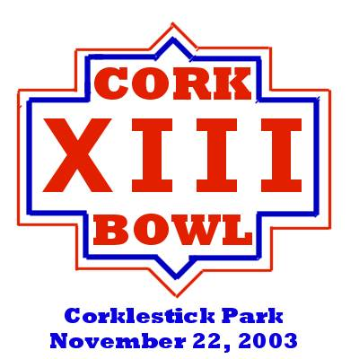

|
November 22, 2003 |
 |
 |
||||||||||
 | ||||||||||
Quarterback 7th Year - 6'4 - 185 When
he retired from the league prior to Cork Bowl 10, Kirby Newell walked away
as one of, if not the best Cork Bowl player of all time.
In just 6 seasons, he had compiled 83 receptions and scored 27 touchdowns. He also recorded a league-high 57 tackles and was tied
for first on the all-time interception list with 8, including 2 that he
returned for touchdowns. However,
a serious leg injury in the summer of 2000 forced him away from the game
he loved. After 3 years away,
Newell is set to return, albeit in a much different capacity.
Newell will be the signal caller for the Grisons, and will become
the game’s first one-way player in the 13-year history of Cork Bowl.
“I’m thrilled to say the least,” remarked an emotional
Newell at the recent press conference announcing his return.
“I thought I had lost that part of my life, but for the league
to offer me the opportunity to come back and quarterback – I don’t
have the words to describe it.” The
spot opened up with Tony Cork’s announcement to call it quits yet again
after his 6 interception performance a year ago.
After Newell showed interest, the wheels were placed in motion to
get Newell back on the field. The
long process of requesting a waiver from the league office, submitting it
for review and awaiting approval from the league’s Board of Directors
wore on Newell. “It’s
been several months since the process first got started,” remarked
Newell. “But I couldn’t
be happier with the decision that was reached.”
Newell will throw his first pass since Cork Bowl 9 this November
22nd. In Cork Bowl
9, Newell went under center for a small portion of the game and went 8-for-12
with 2 touchdowns and no interceptions.
For his career, he has completed 25 of 41 passes for 7 touchdowns,
and has been picked off just twice.
Always known for his bruising receiving and tackling, Newell will
have to adjust to the lack of contact he’ll get as the quarterback.
“I used to thrive on hitting opponents and being hit,”
added Newell. “Not being able to punish the opponent is going
to be hard, but I’m prepared for the challenge.
I plan on dishing out some punishment with my right arm this year.
I’m a competitor and competitors do whatever they have to do
in order to help their team win. I always thought I could have been one of the top passers
in the game had I quarterbacked most of my career instead of playing receiver.
Now’s my chance to prove that to myself and the rest of the
league.” Newell
will have a lot of talent and experience in his receiving corps for sure.
He’ll have the top two all-time receivers in Chris and Patrick
Cork, as well as solid veterans Greg Howard and Kevin Ryan.
“With Chris and Patrick on my side, that’s going to help
a lot,” answered Newell. “It
gives you security knowing they’re going to make the plays if you get
them the ball.” What Newell
must do is control the ball and not be forced into throwing interceptions.
The past two seasons, Chris and Patrick’s teams have thrown
12 interceptions in a pair of bad defeats.
Newell must handle the pressure of the opposing rush and throw the
ball away if nothing is there. The
biggest uncertainty is how Newell will handle any pressure the defense may
put on him. A new rule will be in place this year regarding Newell
at the quarterback position. He
will be deemed down by the use of flag football rules, which will make it
even more important to keep the defense at a distance. “I can guarantee we’ll be going after him as
much as humanly possible,” remarked opposing defensive coordinator
Reggie Truitt. With Newell’s
mobility in question, the Grisons will have to dedicate themselves to stopping
the oncoming rush. “Most
times if the opponent rushed you always had the opportunity for your quarterback
to tuck the ball and run,” commented Chris Cork.
“That may not be the case now.
He’s like Dan Marino back there – he’s not moving
anywhere. We have to give him
time to find an open receiver because if he gets time, he’ll pick their
defense apart. With me, Greg and Kevin up front, we have lots of options
to choose from as far as protection goes. He’s a big, strong guy and can throw over the defense
better than any quarterback that’s ever played.”
Newell’s 6-5 frame could prove invaluable if pressure comes
from up the middle. (He will
be replaced on defense by semi-rookie Robert Trimble.)
|
Quarterback 9th year - 5'9 - 145 Only
once before had a Cork Bowl competitor won 4 consecutive games (Chris Cork
from 1997-2000).
Willy Truitt joined that elite list last December by leading the
Hartebeests to a 133-72 victory for his 4th straight win.
Last year’s victory was #5 in Truitt’s career, but he’s
not satisfied with his 5-2 all-time record.
“I got my ‘one for the thumb’ last year, but I’ve
still got another hand that’s waiting to be filled too,” remarked
Truitt. Once
thought to be too small to play big-time football, Truitt has done more
than silence his critics – he’s won them over.
“When he first quarterbacked in Cork Bowl 6, I wasn’t sure
how he’d handle it,” commented then-teammate Patrick Cork.
“He was solid in the first half, but really struggled with the
rush early in the 2nd and we had to make a change.
He came into Cork Bowl 7 with a different attitude and has really
taken over the league.”
Truitt’s first start in ’96 ended with a 23-for-38, 12
touchdown performance in just under 3 quarters of action.
He followed it up in ’97 with his first complete game –
an up and down day that ended with him going 34-for-69 with 12 touchdowns
and a single-game record 6 rushing touchdowns.
However, he threw 5 interceptions in his team’s loss.
“It always takes a quarterback time to adjust at this level,”
added Truitt.
“Look at Brett Favre’s first year.
He threw 24 interceptions and only had 19 TD’s.
Since 1997, I’ve felt totally comfortable and feel I can continue
to improve on what I’ve built up this far.” What
Truitt has built is a legacy that may never be approached in the years to
come.
His 256 completions and 102 touchdown passes double the next competitor,
and his interception percentage is a miniscule 3.2%.
Since that 5-interception performance in 1997, Truitt has been picked
off just 7 times in the past 5 years in 335 attempts.
He moved past the 100 mark in touchdown passes last year and has
a realistic shot at notching his 300th career completion this
fall.
“The numbers are nice,” added Truitt.
“But the only things that really matter are the wins and losses.” Since
being reunited with brother Reggie in Cork Bowl 11, Willy is 2-0 with 29
touchdowns and just 2 interceptions – including none in last year’s
blowout win.
“Turnovers are the biggest statistic in Cork Bowl,” remarked
Truitt.
“I pride myself on not turning the ball over.
If it means throwing an incompletion that’s fine.
You just can’t give the other team extra possessions or it will
come back to haunt you.”
In last year’s win, Truitt completed just 33 passes (a career
low for a full game), however, nearly half of those completions (16) went
for scores.
Truitt also picked off the 7th pass of his career on defense
last year to move him into 4th place on the all-time interception
list.
Truitt will have his most inexperienced and unproven group of receivers this year. His brother, and favorite target Reggie, is back, but he lost his other go-to guy in Jeff Henney. In his place will be Brooks Wilson who returns after a seven-year stint away from the game. With a former star, and Josh Williamson and Ryan Tomlinson as his receivers, Truitt will surely be tested this year. “He’s had a great supporting cast the past few years,” remarked Chris Cork. “There have been a lot of playmakers catching passes for him recently. He doesn’t have as much talent surrounding him as in the past so we’ll have to see what he’s really made of. If Wilson doesn’t prove to be a solid, go-to #2 receiver, I don’t see where all the passes are going to go.” Truitt, however, isn’t worried. “I’ve been around this game long enough to know who I can count on in different situations. “Reggie and Wilson are proven veterans, and I have no second thoughts about looking to Williamson or Tomlinson at any point in the game. These guys have been through this all a number of times so there is nothing to worry about.”
| ||||||||||||||||||||
Wide Receiver 13th Year - 5'11 1/2 - 145 One
play has been running through Patrick Cork’s mind for almost a year
now. Never
before had one play had such an impact on a Cork Bowl, and never before
had one play stuck in the mind of a player, refusing to leave.
With his team trailing 14-0 with 10 ½ minutes remaining in
the 1st quarter of Cork Bowl 12, Patrick Cork made a tip-toe
catch along the sidelines that proved to be disastrous.
As he fell awkwardly on his left shoulder, with Reggie Truitt tumbling
down on top of him, Cork knew something was wrong.
“Immediately there was a rush of pain and I thought I had a
really bad charlie horse because my shoulder was so tight,” recalled
Cork.
“When I tried to lift my arm and couldn’t, I knew it was
bad news.
I just didn’t know how bad.
Cork Bowl only comes once a year though and I wasn’t about to
stop only 15 minutes into the game.”
Cork would play another quarter and a half with a fractured collarbone
before leaving at halftime for x-rays – the first major injury since
Brian Garrard’s chipped tooth in Cork Bowl 2 ten years before. “Looking
back, I really should have stopped when I got hurt,” reflected Cork.
“Not because of the risk of damaging it more, but because I
was physically unable to play anywhere near full strength.
We got so far behind in that 2nd quarter and it was almost
all my fault.”
Cork spent a few possessions rotating between quarterback and receiver,
but was totally ineffective as a wideout.
“I only caught one pass over the next 30+ minutes of game time
so I was just wasting a spot on the field.
I probably should have QB’ed the entire time, but was too stubborn
to do it.”
The Meerkats were outscored a mind-boggling 49-14 in the second period
and never recovered.
Cork, however, says he has.
“I’m back and hopefully better than ever.
I don’t know if my left shoulder will ever be back to the way
it was, but it hasn’t caused me any problems for quite some time and
the injury will have no effect on how I play this year.
If anything, having to miss basically the entire game, it made me
hungrier.” Due
to the injury, Cork only recorded 3 receptions and failed to find the endzone
in the game.
It was the first time since 1995 in which he had less than 14 receptions.
In the previous six seasons, Cork had averaged a league-best 18.7
catches per game and had scored 36 touchdowns.
Still the all-time leader with 133 career receptions, Cork is looking
to get back on track this November.
“I’ve got some catching up to do – that’s for
sure,” added Cork.
“Losing back-to-back blowouts and getting hurt were not exactly
what I had planned for the past two contests.”
Cork will have a different quarterback for the fourth straight year as Kirby Newell will make his triumphant return as the signal caller for the Grisons. “I really don’t care who’s throwing it,” replied Cork. “The main problem the past two years was that our QB’s have thrown 12 interceptions. All the blame can’t be placed on them. As receivers, we need to do a better job of getting open quicker so they don’t have to try to force the issue. Personally, I think we have the best group of receivers in quite some time. Chris and I are good possession guys and Greg and Kevin can change the game with their ability to run people over after the catch. We may not be that explosive, but we should be much more consistent than the last two years.” Having started his career with a 5-2 record in Cork Bowls before losing back-to-back games the past two seasons, Patrick is hoping the only thing that breaks this year is the first 2-game losing streak of his career.
|
Wide Receiver 10th Year - 5'10 - 155 Long-regarded as the most versatile player in the game, Reggie
Truitt is beginning to establish himself as a top-tier receiver.
After 5 years of splitting time at QB and receiver, Truitt moved
to wideout full-time two seasons ago and has begun to establish himself
as one of the game’s most explosive playmakers.
After completing 135 passes as a quarterback from 1994-2000, Truitt
moved to receiver full-time after being reunited with brother Willy for
Cork Bowl 11, and the results have been outstanding as the Truitts have
won back-to-back games in dominant fashion. Entering Cork Bowl 11, Truitt had caught just 40 passes in his long career. In the past two seasons, he has hauled in 24 balls and has scored 6 of his 16 career touchdowns. Last year, Truitt had a career day on offense and defense to claim the first MVP award in his 9th season. “It was a huge thrill to finally win MVP,” remarked Truitt. “I’ve put in a lot of time and effort in my career and it all came together last December.” Truitt had an amazing game hauling in 12 passes and scoring 5 touchdowns on offense. However, it was his defense that was the difference maker as he picked off a Cork Bowl record 5 passes, returning one for a score. As a change from previous years, the MVP has been awarded
to the top defensive performer the past two years with Truitt and Jeff Henney
claiming the honors. “I
guess the people who vote on it finally figured out that defense wins championships,”
added Truitt. Truitt was also
responsible for delivering the knockout blow to Patrick Cork that put the
game firmly in the hands of the Hartebeests. “He was a one-man show,” replied Patrick.
“Every time we put the ball in the air he was there.
Every year turnovers are the key stat and Reggie forced the issue
and it paid off.” Truitt’s
performance moved him into first place in career tackles (78) and into a
tie with Chris Cork for most career interceptions with 12.
With Henney gone this year, Reggie will undoubtedly be Willy’s primary target for the Zo’ril and could easily surpass his career high of 12 receptions. Not to be overlooked is Truitt’s superb defensive play-calling in recent years. Since he took the helm as his team’s defensive coordinator two years ago, Truitt’s defenses have allowed just 85 points a game – far below the average of 124 ppg. Using blitzes from all directions, they have put pressure on opposing quarterbacks and forced an amazing 12 interceptions in the past two years. This year, he may have to change some of his past blitz packages after losing top rusher Greg Howard in free agency. There’s little doubt, however, that Reggie will find ways to put pressure on Kirby Newell. “Kirb’s like a sitting duck back there,” fired Truitt. “With or without Greg, we’ll get to him. Greg wasn’t the only guy that rushed well for us. I don’t see Williamson as being a step down from Greg in any way. He’s the all-time sack leader so he must know a thing or two about getting into the backfield. We will prove this year it was the scheme, not the players, that has been so successful.”
|
Wide Receiver 13th Year - 6'2 - 190 With
just 24 catches over a three-year period from 1999-2001, the rumors were
swirling that Chris Cork may be nearing the end of a brilliant career.
However, he showed last year he still had some gas left in the tank
with his 13 catch, 6 touchdown performance in the Meerkats’ blowout
loss.
Cork carried a huge load most of the day after Patrick left injured.
Chris accounted for an amazing 13 of his team’s 29 receptions
(45%) and 6 of the team’s 10 touchdowns (60%).
“It’s more than a little scary to think what the outcome
would have been had Chris not played so well,” remarked last year’s
QB Tony Cork.
“At this stage in his career, most people don’t expect
him to carry a team, but he showed he still can last year.” Silencing
the critics, however, was not Chris’s main objective.
“When you start listening to the writers and the sports radio
talk show guys, you lose focus on what’s important,” commented
Cork.
“Winning Cork Bowls is the #1 priority – not catching a
lot of passes or scoring a lot of touchdowns.” Cork
has sacrificed a lot of his own offense the past two years by staying in
and helping pick up blitzes.
“He’s been an absolute rock on the line,” praised
brother Patrick.
“If we are going to be getting blitzed, someone has to take
responsibility to pick it up.
We’ve tried a number of different blocking schemes – leaving
two guys in or rolling the quarterback – but the best one so far is
to let Chris take on whoever is coming.
He’s been unselfish and has done the job perfectly for quite
some time.
He’s like Jonathan Ogden…with good hands.” Despite
the recent decline in numbers, Cork still sits comfortably in second place
on the all-time receptions list with 102, including 36 touchdowns.
He will surely be a favorite target of new quarterback Kirby Newell.
“We played against each other for so many years that it’s
going to be odd standing in the same huddle,” replied Cork.
“We knew each other’s every move and that will be a huge
advantage come November 22.
I never thought I’d see the day when we were in the same lineup
somewhere other than the Pro Bowl.
It’s almost unfair to the other team.” Cork’s
career has been a series of streaks – both good and bad.
He started with three straight losses, but then reeled off four consecutive
victories.
However, the past two years have resulted in defeats again, and Cork
is looking to turn that around.
“Hopefully the trend will continue and we’ll reel off two
or three wins in a row.
We definitely have the guys to do it, it’s just a matter of
taking that talent onto the field and performing.” With Greg Howard and Kevin Ryan both on board, Cork may not have to spend as much time blocking as previous years, and could definitely have a repeat performance of last year with a dozen or more catches. After struggling to contain Jeff Henney the past two seasons on defense, Cork, who has a league-leading 12 career interceptions, will find himself matched up against long-time absentee Brooks Wilson who is returning after missing 7 seasons. “I knew what he had in him when he was still around, but you never know what happens to a person after that long away from the game,” remarked Cork. “I’d be lying to you though if I told you I wasn’t licking my chops seeing Wilson on the other side of the ball.”
|
Wide Receiver 5th Year - 6'1 - 172 Brooks
Wilson will once again be making his mark on the Cork Bowl record books
when the first snap is taken on November 22nd.
In Cork Bowl 5, Wilson became the first married player to play in
a game (not including Tony Cork who was married before he played in a Cork
Bowl).
Also in that game, Wilson became the only player in Cork Bowl history
to record a reception that went for a safety.
This year, he’ll add two more sidenotes to the game as he will
become the first father (not including T. Cork) to play and he’ll be
returning after an unprecedented 7 years away from the game.
“It’s quite a thrill to be returning to the field, especially
since my kids can finally see me play,” remarked Wilson.
“I don’t think it will really hit me until I step onto
the field on game day, but the preparation and anticipation have been absolutely
awesome.” Having
played in the pre-modern era, Wilson doesn’t have many statistics to
show his worth despite his four years of experience (Cork Bowls 1, 2, 3
and 5).
With just portions of Cork Bowl 2 on record, Wilson led his team
with 6 receptions and a touchdown in just under one half of action.
In Cork Bowl 5, he again led his squad with a game-high 13 catches,
but only recorded one touchdown in the Big Horned Sheep’s embarrassing
130-77 loss.
Since that snowy November afternoon, Wilson hasn’t set foot
on the Corklestick field.
“I didn’t plan to step away at the time,” Wilson answered.
“It just turned out that way.
What I found out was the longer you are away from the game, the more
you miss it.
When I heard the league was asking me back I couldn’t believe
it.”
Wilson was actually invited back to be the honorary captain of last
year’s game but refused the offer.
“If I wasn’t there to play, I didn’t want to go at
all,” he replied.
“I don’t know how I would have handled having to watch
from the sidelines.” In
just under 1 ½ games of official action, Wilson has hauled in 19
passes for 2 touchdowns and has recorded 8 tackles and 2 interceptions on
defense.
Having been away from the game for so long, nobody can gauge what
Wilson will bring to the field this fall.
“It’s impossible to know what he’ll do,” remarked
Tony Cork.
“I’ve spent 2 or 3 years away in the past and come back
with mixed results.
He’s been gone for 7 years.
He could be a completely different player from what we knew in 1995
– either for the better or for the worse.” “It’s
exciting for the league as a whole to have Brooks back on the field,”
said Commissioner Patrick Cork.
“Some of these guys playing have never been on the same field
with him.
He’s one of the founding fathers of Cork Bowl and it’s
great to get some of that old-school flavor back in the league.
He could teach some of these young guys a thing or two about how
this game is to be played.
They looked up to him when they were younger and now they’ll
be sharing the same field with him.
It’s a win-win situation.”
Wilson will need to be on top of his game and won’t have the luxury of easing back into the mix. With Jeff Henney gone from last year’s Hartebeest squad, Wilson will likely step right into the #2 receiver role behind Reggie Truitt. “I have total confidence in Brooks and will look to him early and often,” replied Willy Truitt. “I was a little worried about Henney two years ago in his first game and look how that turned out. Brooks is a professional and he knows how to prepare. It’s not like he’s a rookie playing for the first time.” Wilson will likely find himself matched up against Chris Cork on both offense and defense. “After being away that long, we’ll definitely be testing him a lot early on to see where he’s at,” responded Cork. “7 years is an awfully long time to be away to not have your play suffer at least a little bit. The best thing he has going is that his body has avoided a lot of hits that the rest of ours haven’t. Never underestimate the importance of being fresh.”
|
Wide Receiver 8th Year - 5'6 - 145 He
has gained the reputation as being the league’s most resilient defender,
but Greg Howard wants to return his offense to the level it was three years
ago. Howard
put together four outstanding offensive seasons in a row from 1997-2000
hauling in 38 passes in four games and scoring an amazing 22 touchdowns.
“For a while, every time Greg caught a pass it was for a score,”
stated Willy Truitt.
“Long passes, short passes, it didn’t matter where he caught
the ball, he was usually in the endzone.”
However, in the past two seasons, Howard has dropped back catching
just 6 passes for 4 touchdowns.
Last year, he had his lowest offensive output of his career with
only 2 catches and no scores.
“Greg
really struggled catching the ball last year,” remarked former teammate
Reggie Truitt.
“He dropped a lot of passes that he usually holds onto and I
think it started to really get inside his head.
That’s one main reason we lost him in free agency this offseason
– we just weren’t sure what we’d be getting this year, and
couldn’t afford to bring him back.”
The Grisons hope they are getting the player with the highest all-time
touchdowns-to-catch ratio (26 TD’s / 46 catches) and not the one that
has been hampered by a recent case of the dropsies.
“We know what he’s capable of offensively,” replied
new teammate Patrick Cork.
“There’s no doubt in my mind that he’ll rebound this
year and get back on track.
He’s never felt comfortable with Willy as his quarterback so
a change may really help him return to form.” “I
don’t want to be known as the guy that plays great defense but can’t
make the big catch,” answered Howard.
“I want to be as consistent as possible on both sides of the
ball.
I worked a lot in the offseason on watching the ball all the way
into my hands and not trying to run before I caught it.
That’s what got me in trouble in the past.
You’ve got to make the catch before you can make a play.”
Despite
his recent offensive struggles, Howard’s defense has been rock solid
for the past three seasons.
He has put relentless pressure on opposing quarterbacks despite recording
only 2 sacks in his career.
“If there was a statistic for quarterback pressures, Greg would
be ahead of the rest of the league combined,” said Chris Cork.
“He’s really hard to game plan against because it usually
takes two guys to slow him down.
He’s in such good condition that he doesn’t wear down either.
I’m excited to have him on our side this year for no other reason
than the defensive intensity he brings every play.”
Two years ago, Howard recorded a career-high 14 tackles.
He only recorded 6 last year, but was the main reason Tony Cork was
picked off 6 times.
“He was in the backfield every time we snapped the ball,”
added Patrick Cork.
“That allows the cover guys to gamble and go for interceptions
which is exactly what they did last year.” With Chris and Patrick Cork, as well as Kevin Ryan joining him on offense, Howard has a great shot to rack up the receptions if one of the other guys is double-teamed. He must play a role in picking up the opposing blitz as well to keep the defense away from Kirby Newell. Defensively, there’s no reason to believe Howard won’t be blitzing and hassling Willy Truitt all afternoon. Entering his 8th season, Howard is tied for the league’s best individual record with a 5-2 career mark.
|
Wide Receiver 8th Year - 5'6 - 150 There
was a time a year and a half ago that Josh Williamson thought he’d
never play in another Cork Bowl.
Battling health problems, Williamson fought through them to return
to the field last fall after missing the previous year.
Despite his team’s blowout loss, Williamson was just happy to
be on the gridiron.
“This game means an awful lot to a number of people, including
me,” stated Williamson.
“When you think you may not play again it’s really tough,
but I’m so glad I made it back and hope to be around for a lot more
years.” Williamson
hauled in just 5 passes last year and scored one touchdown receiving, and
another off of a lateral.
Defensively, he recorded his league-leading 4th sack –
which went for a safety.
As his career has evolved, Williamson has been one of the league’s
most under-appreciated players for quite some time.
“He showed consistent improvement leading up through Cork Bowl
10,” remarked Patrick Cork.
“He went from 4 catches to 6 and then had 10 back-to-back years,
yet nobody seemed to mention him as an elite offensive player.
When you get the reputation as a defensive specialist, it takes a
lot for people to look past that and see you can catch the ball too.”
Williamson’s
breakout season came in Cork Bowl 8 when playing for the Lemurs.
Although he caught just 6 passes for 3 touchdowns, he was a force
on defense recording 10 tackles, a single game-record 2 sacks, forced one
fumble and recorded a safety in his team’s 142-126 victory.
“That game put him on the map as a great pass rusher and relentless
defender,” added Willy Truitt.
“He was in my face all game and was flying around the ball.”
The following year, Williamson continued to excel on the defensive
side of the ball finishing Cork Bowl 9 with 8 tackles, an interception and
another quarterback sack – this time in a loss.
Another solid performance in Cork 10 – where he also caught
10 passes and scored 3 touchdowns began to cement Williamson as a steady
producer on both sides of the ball.
However, he missed Cork Bowl 11, and spent last year trying to get
back into the groove. “Last
year was tough because I’d been away for a year,” commented Williamson.
“It took a couple of quarters to really get physically and emotionally
to the level you need to be to play.
Unfortunately, by that time we were so far behind that the rest of
the game just breezed by.
I’ve got that transition year out of the way though and am ready
to jump back into things full bore.”
Williamson may be looked upon to make some offensive plays this year as Willy Truitt lost one of his favorite targets, Jeff Henney, in the offseason. With Brooks Wilson returning after a 7 year hiatus, Williamson will have to provide some veteran leadership and stability to the Zo'ril offensive attack. “He’s got to play a great game on offense if we’re going to compete,” replied Willy. “He’s got to help pick up any blitzes and be ready to take short passes and turn them into long gains.”
|
Tight End 8th Year - 5'11 - 160 In
a year of comebacks, Kevin Ryan can relate to what Kirby Newell and Brooks
Wilson will be going through this year.
“It was tougher than I ever imagined it would be,” Ryan
said.
“I missed two years of action and it took me at least a year
or two after that to get back in the swing of things.
It’s hard to describe how difficult it is to play at a high
level after missing significant time on the field.” After
playing in Cork Bowls 4 and 5, Ryan missed the next two years after a career-threatening
injury forced him out of the game.
After nursing himself back to health, he returned to the field for
Cork Bowl 8, and recorded solid numbers with 7 catches and 5 touchdowns,
but didn’t feel anywhere near comfortable.
“You forget how much intensity and pressure there is until you’re
thrown back into it,” added Ryan.
In Cork Bowls 9 and 10, Ryan split time at the quarterback position
with a pair of successful showings completing 38 of 68 passes for 15 touchdowns
in two games.
“I enjoy the quarterback spot on occasion, but I really love
to punish people,” stated Ryan.
“I’m bigger than a lot of guys in this game and I’ve
never been one to shy away from contact – you can ask Jay Anderson
about Cork Bowl 5 if you don’t believe me.
There’s no better feeling than catching a pass and running someone
over.” Ryan
got his wish in Cork Bowl 11 when he was moved back to full-time receiver
and put together the best game of his career by far.
Ryan hauled in a career-high 13 passes (nearly doubling his previous
best) and scored 4 touchdowns, and single-handedly took over the fourth
quarter catching 6 passes and scoring three times to seal the victory.
Defensively, Ryan tallied 6 tackles and had one-and-a half sacks
and would have won MVP if not for the defensive heroics of Jeff Henney.
“If Henney doesn’t return all three of the interceptions
for touchdowns, there’s no doubt Kevin would have won MVP,” remarked
Patrick.
“He carried their team in the 4th quarter and played
excellent defense as well.” After
a breakout game in Cork Bowl 11, Ryan was looked upon to produce similar
numbers last year.
However, like most players on the Meerkats, his stats dropped considerably
as he finished with 5 catches and 2 touchdowns in the blowout defeat.
“It almost seemed like last year’s game never happened,”
added Ryan.
“It got out of control early and we never had a shot.
Most of us were just going through the motions in the second half.” Ryan will return for another season with the Cork brothers and hopes the experience of last year can be a building block for Cork Bowl 13. “You can learn a lot from a loss like last year’s,” commented Ryan. “If you don’t learn something, then it’s a complete waste. Having gone through that with Chris and Patrick, we know what losing like that feels like and don’t want to let that happen again.” Ryan is tied for 5th all time in receptions with 46, but has one of the lowest winning percentages in the game with a 2-5 mark, including 5 losses in his last 6 games.
|
Wide Receiver 7th Year - 6'0 - 165 He
has a 3-3 all-time record in Cork Bowls and has scored 11 touchdowns on
33 catches in his career, but Ryan Tomlinson can’t get away from his
critics that say he was a flash in the pan in his debut in Cork Bowl 7.
“You can’t please all of the people all of the time,”
answered Tomlinson.
“I have grown accustomed to the negativity that surrounds me
and have tried to use that to my advantage.
When people doubt you and tell you that you aren’t capable of
certain things it provides plenty of motivation.” Only
twice in his 6-year career has Tomlinson totaled more than 4 receptions
in a game – one of those being his rookie season when he hauled in
11 passes and scored 2 memorable touchdowns.
However, he also took a vicious late hit from Kirby Newell in the
4th quarter and some say he has never recovered from it.
“I remember how he played in his first game and I’ve seen
him play the five years since,” responded Patrick Cork.
“If that hit didn’t get into his head, then there’s
something else going on that none of us know about because you can still
see the hesitancy he shows in his route running.” “The
hit has nothing to do with my recent performances,” answered Tomlinson.
“I just haven’t found a quarterback that worked as well
with me as Reggie did that first year.
We were on the same page from the start and I haven’t made that
connection with Willy yet.
After adjusting to his style last year, I think I’ve made strides
to living up to the hype after my rookie year.”
Since his 11-catch debut, Tomlinson has averaged just 4.4 receptions
per game in the past five seasons, including a career-low 3 last year.
If
he were ever to have a year to break the cold spell, this would appear to
be it as he will be matched up with rookie defensive replacement Robert
Trimble on offense.
However, the same was thought last year when he was guarded by 55-year
old Tony Cork.
“We all thought he might break the slump last year with Coach
guarding him,” replied Kirby Newell.
“If you can’t get open with an old man covering you, you’ve
got problems.
Then he goes out and only catches 3 passes.
Why would anyone expect more from him with a younger, faster defender
on him?”
“Trimble
has no idea what he’s getting himself into,” barked Tomlinson.
“Coach may have been old, but he was experienced.
Trimble is young and green.
The last time I had someone like that covering me it was Justin Massey
and I torched him for 11 catches.
Expect the same this year.
People have been all over me about my offense the past few years,
but I have caught more passes than Greg has the past two games.”
Asked if having a fresh defender guarding him would be a benefit
or a hindrance, Tomlinson added, “I think it will be a good thing for
me because he’s going to come in and be anxious to make a play.
That’s when you get overaggressive and end up getting beat for
scores.” Tomlinson also took a lot of heat in Cork Bowl 11 for allowing most of Kevin Ryan’s 13 catches. Last year, however, he recorded a career-high 5 tackles and showed intensity and aggressiveness that hadn’t been seen from him before. Tomlinson will surely find himself guarding Kevin again this year, and vows that the results will be different from the past. “The field was muddy that year and there was no telling what your footing was going to be on each play,” said Tomlinson. “A number of his catches came when I fell down or I got stuck in the mud. Last year was a clean game and he only had 5 catches. I don’t expect him to have many more than that this year.”
| ||||||||||||||||
Defensive Replacement 1st 1/2 Year - 5'8 - 140 Robert Trimble will forever have his name in the Cork Bowl record books after last year. He’ll cement his name in history when he steps on the field for Cork Bowl 13 as the first-ever defensive-only player. In Cork Bowl 12, Trimble became the first injury substitution when he came on in the third quarter for Patrick Cork. This year, depending on who starts the game with possession, Trimble could become the first player to start a game as a one-way player. “Although it really doesn’t matter one way or the other, I’d be lying if I told you I didn’t want us to start out on defense,” remarked Trimble. “For the game to be around this long and to have so much history, to be the first player to ever accomplish something is quite an honor.” Trimble
will be the defensive replacement for Kirby Newell who will play quarterback
for the Grisons. Last year,
Trimble attended his first ever Cork Bowl as a fan, and ended up playing
one quarter after Cork left injured. “It’s like something right out of the movies,”
added Trimble. “There
I am, watching the game, and the next thing I know I am pulled out of the
stands and onto the field. It
was kind of surreal, and the one quarter I played just flew by.” In
his one quarter of action, Trimble caught 2 passes from Tony Cork moving
him into a tie with Brian Garrard for 24th all-time.
However, none of that will matter this year as he will strictly play
defense. In his one quarter of action, Trimble recorded one tackle
and had a nice pass breakup near the goal line.
“There’s no way I could complain about only playing defense,”
replied Trimble. “Just
to be a part of the game and be able to contribute in any way is a thrill. It gives me an opportunity to be on a team with stars
like Chris and Patrick and Kirby.
I’m going to do everything in my power to produce in my time
on the field.” “His enthusiasm is refreshing,” commented Patrick Cork. “As for his ability to play defense, he showed good quickness and closing speed on several plays last year and had a touchdown saving tackle of Reggie too. He’ll be just fine covering Tomlinson.” Trimble’s job will be to hound receiver Ryan Tomlinson from the opening snap. “I should be fresher than anyone else,” added Trimble. “I have to use that to my advantage. The other guys are counting on me to do my part and that is to guard Tomlinson. I can’t try to do too much otherwise I’ll get myself in trouble. If I can keep my emotions in check and play within myself, I have nothing to worry about.”
|